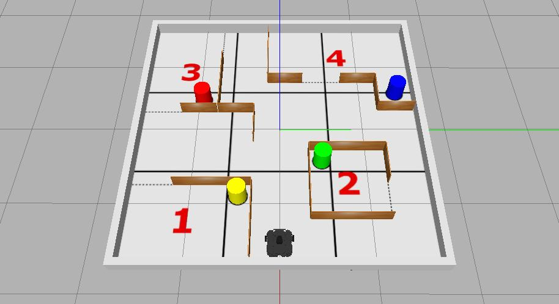
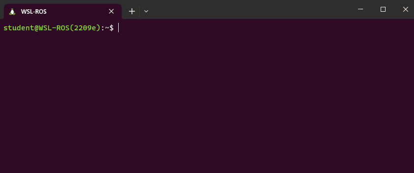

Task 5: Real-World Exploration
Develop the ROS node(s) that allow a real TurtleBot3 Waffle to autonomously explore the robot arena in Computer Room 3, navigating through a series of rooms as quickly as possible, documenting its exploration with a photo of a beacon and a map of the environment as it goes!
Assessment Format: Real Robots
Marks: 35/100
Summary¶
This final task combines a bit of everything that you have done in the previous ones.
The task is to make a real TurtleBot3 Waffle explore the DIA-CR3 robot arena, which will contain a series of "rooms" each with a coloured, cylindrical beacon in it. The main aim is to safely explore each of the rooms in the shortest time possible (emphasis on "safely" here, meaning you need to also try not to crash into anything in the process!) There are then some more advanced features that you will need to try to implement as well.
Simulation Resources¶
While you'll need to do this on a real robot, we've put together a simulation to help you develop your package functionality. This also helps to illustrate the nature of the task. You can launch the simulation from the com2009_simulations package with the following roslaunch command:

The Computer Room 3 robot arena might look something like this for the real assessment, where (similarly to the simulated environment) "rooms" will be constructed of wooden walls 180 mm tall, 10 mm thick and either 440 mm or 880 mm in length, and each room will contain a cylindrical beacon of 200 mm diameter and 250 mm height.
Note
The layout of the real robot arena will be different to the simulation for the assessment:
- Rooms will be different shapes and sizes and in different locations, but there will always be four of them.
- The robot might not necessarily be located at the same starting point as in the simulation; it could start anywhere.
- Beacons will be the same shape, size and colour as those in the simulation (yellow, red, green and blue). Detecting colours is a lot harder in the real-world than it is in simulation though, so you'll need to do a lot of testing on a real robot if you want to get this working robustly (you will have access to all the beacons during the lab sessions).
Details¶
The robot will have 3 minutes (180 seconds) in total to complete this task.
- The arena floor will be marked out with 9 equal-sized zones, and (much like in Task 2) your robot will need to try to enter as many of these zones in the time available.
- In addition to this, the robot will need to try to explore the four rooms that will also be present in the arena. There will be marks available not only for the number of rooms that the robot manages to explore, but also the speed with which it manages to explore them all (see the marking section below for more details).
- Your robot will need to do this whilst minimising the number of contacts made with anything in the environment ("incidents"). Once an incident has taken place, we'll move the robot away slightly so that it is free to move again, but after five incidents have occurred the assessment will be stopped.
-
Your team's ROS package must contain a launch file named
task5.launch,such that (for the assessment) we are able to launch all the nodes that you have developed for this task via the following command:
Having developed the core functionality for the task, as above, you will then need to think about a couple of more advanced features...
Advanced Feature 1: A photo of a beacon¶
As with all previous tasks, we will launch the ROS node(s) from within your package for this task using roslaunch. For this one however, we will also attempt to supply an additional argument when we make the command-line call:
...where {colour} will be replaced with either yellow, red, green or blue (the target colour will be selected randomly). Based on this input, your robot will need to capture an image of the beacon in the arena of the same colour!
Remember
You should know from this the fact-finding mission that the camera image topic name is different on the real robot!
The root of your package directory must contain a directory called snaps, and the image must be saved into this directory with the file name: the_beacon.jpg.
You will therefore need to define your launch file to accommodate the target_colour command-line argument. In addition to this, inside your launch file you'll also need to pass the value of this to a ROS node within your package, so that the node knows which beacon to actually look for (i.e. your node needs to know whether to look for a yellow, red, green or blue beacon). We didn't actually cover this kind of launch file functionality in Lab Assignment #1, but there are a whole load of additional resources available in the Launch Files section of this course site, which should help you with this.
We will test whether your launch file has been correctly built to accept the target_colour command-line argument using autocomplete in the terminal. After typing the first four characters of the argument name, i.e.: targ, the rest of the name should be completed for us when we press the Tab key, as illustrated below:

To illustrate that the value of the target_colour command-line argument has been correctly passed to a ROS Node within your package, you should configure your Task 5 Node (or any one of your nodes, if you have multiple) to print a message to the terminal as soon as it starts. The message should be formatted exactly as follows:
...where {colour} (including the curly brackets!) is replaced with the actual colour that was passed to your task5.launch file (yellow, red, green or blue).
Advanced Feature 2: Mapping with SLAM¶
Marks are also available if, whilst your robot is completing the task, you can also run SLAM and generate a map of the environment in the background.
In Week 3, Exercise 3 of Lab Assignment #1 we launched SLAM using the following roslaunch command:
Once you've had a look at the Launch Files section it should be clear how to launch other launch files from within your own. Alternatively, you could navigate to the turtlebot3_slam package in WSL-ROS and have a look at the content of the launch file that we executed from within this package for Exercise 3, to see how you might be able launch the same (or similar) functionality within your own task5.launch file.
When it comes to saving the map that has been generated by SLAM, think about how we did this in the Week 3 Exercise. This involved calling a map_saver node from the command-line. It's possible, however, to call nodes (and indeed launch files too) from within other ROS nodes using the roslaunch Python API.
The root of your package directory must contain a directory called maps, and the map file that you obtain must be saved into this directory with the name: task5_map.
Marking¶
Criterion A: Arena exploration¶
Marks: 8/35
You will be awarded 1 mark for each zone of the arena that your robot manages to enter (excluding the one it starts in). As with Task 1, the robot only needs to enter each zone once, but its full body must be inside the zone marking to be awarded the associated mark.
Criterion B: Room exploration¶
Marks: 10/35
Marks will be awarded based on the maximum number of rooms that your robot manages to explore within the 180-second time limit and the speed by which it does this. The marks available per room explored will be awarded as follows:
| Time (seconds) | 1 room | 2 rooms | 3 rooms | 4 rooms |
|---|---|---|---|---|
| 160-180 | 1.0 | 4.0 | 7.0 | 10.0 |
| 140-159 | 1.4 | 4.4 | 7.4 | 10.0 |
| 120-139 | 1.8 | 4.8 | 7.8 | 10.0 |
| 100-119 | 2.2 | 5.2 | 8.2 | 10.0 |
| 80-99 | 2.6 | 5.6 | 9.0 | 10.0 |
| 60-79 | 3.0 | 6.0 | 9.0 | 10.0 |
| <60 | 3.5 | 6.5 | 9.0 | 10.0 |
Criterion C: An "incident-free-run"¶
Marks: 5/35
Once again, if your robot completes the task (or the 180 seconds elapses) without it making contact with anything in the arena then you will be awarded the maximum marks here, with deductions then applied for each unique "incident" (to a minimum of 0/5). Your robot must at least leave the zone that it starts in to be eligible for these marks. Once five incidents have been recorded then the assessment will be stopped.
Criterion D: Advanced Features¶
Advanced Feature 1: A Photo of a Beacon
Marks: 7/35
| Criteria | Details | Marks |
|---|---|---|
| D.1.a | Your task5.launch file accepts the target_colour command line argument. Assessed by checking for autocompletion, as discussed above. |
1 |
| D.1.b | A message is printed to the terminal to indicate that the correct target colour has been passed to a node in your package. This must occur straight away on executing your launch file, and the message format must be exactly as specified here. | 1 |
| D.1.c | At the end of the assessment a single image file, called the_beacon.jpg, has been obtained from the robot's camera (during the course of the assessment), and this is located in a folder called snaps at the root of your package directory i.e.: com2009_team{}/snaps/the_beacon.jpg. |
1 |
| D.1.d | Your com2009_team{}/snaps/the_beacon.jpg image file contains any part of the correct beacon. |
2 |
| D.1.e | Your com2009_team{}/snaps/the_beacon.jpg image file contains the correct beacon, where the entire width of the beacon can be observed. |
2 |
Advanced Feature 2: Mapping with SLAM
Marks: 5/35
| Criteria | Details | Marks |
|---|---|---|
| D.2.a | At the end of the assessment, a map of the robot arena (or any part of it) has been generated. Two files should be generated: a .pgm and a .yaml, which must both be called task5_map, and these files must be located in a maps folder at the root of your package directory i.e. com2009_team{}/maps/task4_map.pgm. |
1 |
| D.2.b | Your com2009_team{}/maps/task4_map.pgm map that is created during the assessment depicts at least one of the rooms in the arena. |
2 |
| D.2.c | Your com2009_team{}/maps/task4_map.pgm map that is created during the assessment depicts two or more of the rooms in the arena. |
2 |
Created: 2023-02-20